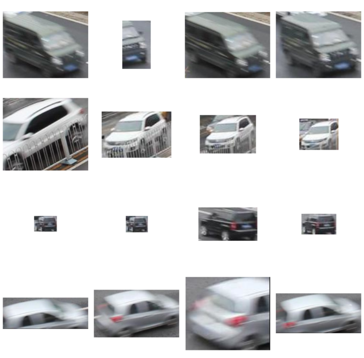
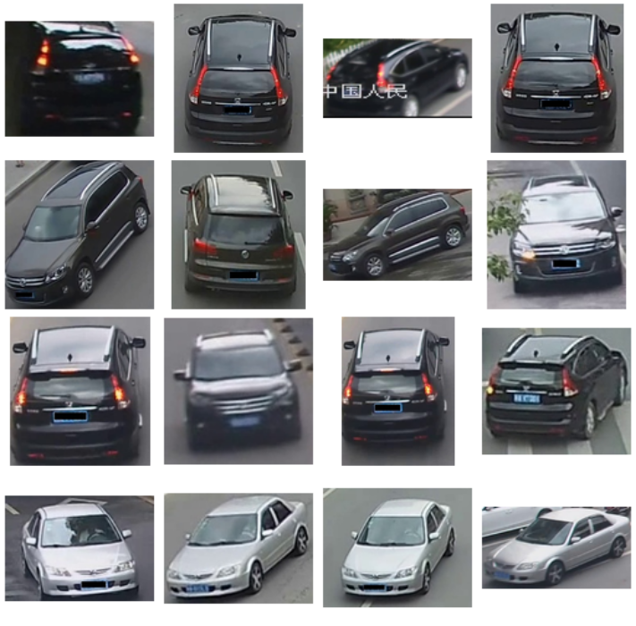
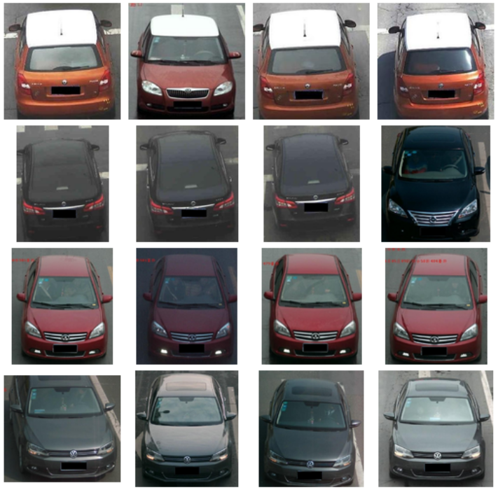

VRIC: Vehicle Re-Identificaton in Context
VRIC
VeRi-776
VehicleID
Description
Existing vehicle re-identification (re-id) evaluation benchmarks
consider strongly artificial test scenarios by assuming the availability of
high quality images and fine-grained appearance at an almost constant
image scale, reminiscent to images required for Automatic Number Plate
Recognition, e.g. VeRi-776.
Such assumptions are often invalid in realistic vehicle re-id
scenarios where arbitrarily changing image resolutions (scales) are
the norm. This makes the existing vehicle re-id
benchmarks limited for testing the true performance of a re-id method.
In this work, we introduce a more realistic and challenging
vehicle re-id benchmark, called Vehicle Re-Identification in Context (VRIC).
In contrast to existing datasets,
VRIC is uniquely characterised by vehicle images
subject to more realistic and unconstrained variations in
resolution (scale), motion blur, illumination,
occlusion, and viewpoint. %, and background clutter.
It contains 60,434 images of 5,626 vehicle identities captured by
60 different cameras at heterogeneous road traffic scenes
in both day-time and night-time.
Download
VRIC Dataset (389MB):
[Google Drive]
[Baidu Cloud]
Citation
Vehicle Re-Identificaiton in Context.
Aytac Kanaci, Xiatian Zhu and Shaogang Gong.
Technical Report, 2018.
Paper
@inproceedings{2018gcpr-Kanaci,
author = {Aytac Kanaci and
Xiatian Zhu and
Shaogang Gong},
title = {Vehicle Re-Identification in Context},
booktitle = {Pattern Recognition - 40th German Conference, {GCPR} 2018, Stuttgart,
Germany, September 10-12, 2018, Proceedings},
year = {2018}
}
VRIC is a result of a conversion of from UA-DETRAC vehicle tracking dataset. A conversion using the ground truth tracking identities were used in the creating of the re-identification labels. More details can be found in our paper.
Licence
All the images were collected from UA-DETRAC
and the copyright belongs to the original owners.
@article{DETRAC:CoRR:WenDCLCQLYL15,
author = {Longyin Wen and Dawei Du and Zhaowei Cai and Zhen Lei and Ming{-}Ching Chang and
Honggang Qi and Jongwoo Lim and Ming{-}Hsuan Yang and Siwei Lyu},
title = { {UA-DETRAC:} {A} New Benchmark and Protocol for Multi-Object Detection and Tracking},
journal = {arXiv CoRR},
volume = {abs/1511.04136},
year = {2015}
}
Please feel free to send any questions, comments, and evaluation results with a brief method description to Aytac Kanaci at a.kanaci@qmul.ac.uk.